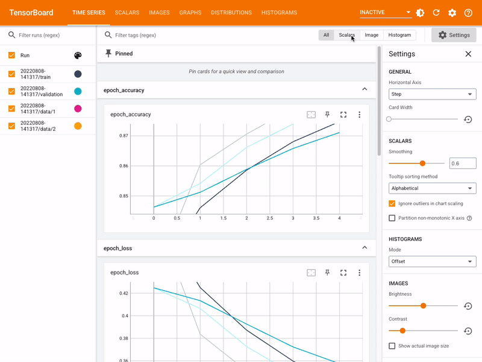
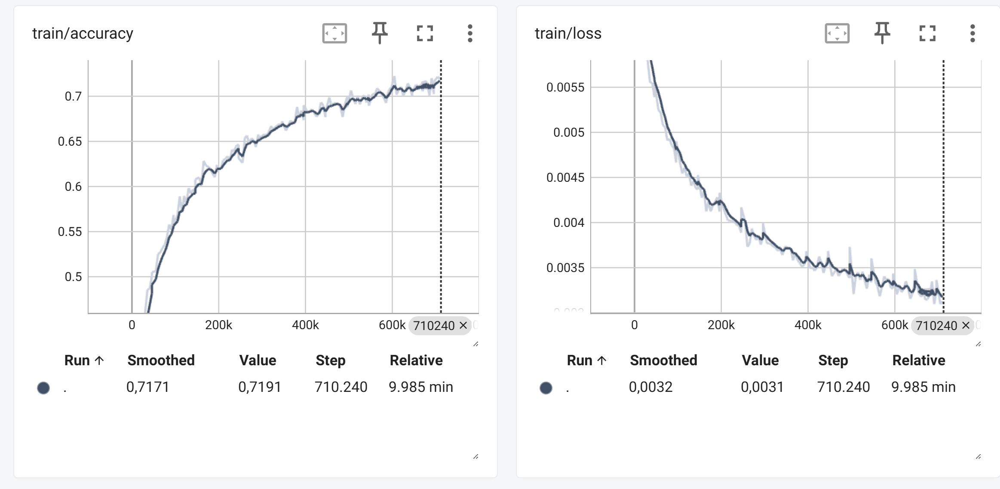
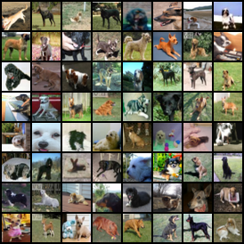

TensorBoard
Zur Visualsierung der Trainingsfortschritte und der Modellarchitektur in PyTorch verwenden wir TensorBoard. TensorBoard ist ein leistungsstarkes Tool, das es ermöglicht, verschiedene Aspekte des Trainingsprozesses zu überwachen, wie z.B. den Verlust, die Genauigkeit und die Modellarchitektur.
Ursprünglich wurde TensorBoard für TensorFlow entwickelt, aber es gibt eine PyTorch-kompatible Version, die es ermöglicht, TensorBoard in PyTorch-Projekten zu verwenden.
{kind=link}
Aufgabe 1: TensorBoard in PyTorch einrichten
Um TensorBoard in PyTorch zu verwenden, müssen Sie zunächst das tensorboard-Paket installieren. Dies kann über pip erfolgen:
pip install tensorboard
Starten Sie anschließend TensorBoard in Ihrem Terminal mit dem folgenden Befehl:
tensorboard --logdir=runs
Das TensorBoard-Interface ist dann unter http://localhost:6006 erreichbar.
Aufgabe 2: TensorBoard-Logger erstellen
TensorBoard benötigt einen Logger, um die Trainingsdaten zu protokollieren. Dieser Logger wird verwendet, um verschiedene Metriken während des Trainings zu speichern, wie z.B. den Verlust, die Genauigkeit und andere relevante Informationen. Um einen TensorBoard-Logger zu erstellen, verwenden wir die Klasse SummaryWriter aus dem torch.utils.tensorboard-Modul.
Öffnen Sie nun die Datei board.py und implementieren Sie die Methode TensorBoardLogger.create_writer.
Lösung anzeigen
def create_writer():
dirname = os.path.dirname(os.path.abspath(__file__))
board_path = os.path.join(dirname, "runs")
return SummaryWriter(log_dir=board_path)
Aufgabe 3: Das Modell visualisieren
Es kann sinnvoll sein, die Architektur des Modells in TensorBoard zu visualisieren. Dazu verwenden wir die Methode add_graph des SummaryWriter.
Öffnen Sie nun die Datei board.py und implementieren Sie die Methode TensorBoardLogger.log_graph.
Lösung anzeigen
def log_metrics(writer, metrics):
tag = "train" if metrics["train"] else "validation"
writer.add_scalar(f"{tag}/loss", metrics["loss"], metrics["step"])
writer.add_scalar(f"{tag}/accuracy", metrics["accuracy"], metrics["step"])
Das Graph dieses Netzwerkes sieht dann wie folgt aus:

Aufgabe 4: Metriken protokollieren
Während der Trainings- und Evaluierungsphasen ist es wichtig, verschiedene Metriken zu protokollieren, um den Fortschritt des Modells zu überwachen.
Wir müssen zunächst für jeden Batch die Metriken wie Verlust und Genauigkeit aktualisieren. Diese Metriken werden dann in TensorBoard protokolliert, um den Trainingsfortschritt zu visualisieren.
Öffnen Sie nun die Datei board.py und implementieren Sie die Methode TensorBoardLogger.update_metrics.
Lösung anzeigen
def update_metrics(self, logits, labels):
criterion = nn.CrossEntropyLoss()
loss = criterion(logits, labels)
# Berechne die Anzahl der korrekten Vorhersagen
predicted = torch.argmax(logits, 1)
correct = (predicted == labels).sum().item()
# Aktualisiere die Metriken
self.metrics["total_loss"] += loss.item()
self.metrics["total_correct"] += correct
self.metrics["total_samples"] += labels.size(0)
Implementieren Sie anschließend die Methode TensorBoardLogger.log_metrics, die die Metriken in TensorBoard protokolliert.
Lösung anzeigen
def log_metrics(self, step, train=True):
loss = self.metrics["total_loss"] / self.metrics["total_samples"]
accuracy = self.metrics["total_correct"] / self.metrics["total_samples"]
tag = "train" if train else "validation"
self.writer.add_scalar(f"{tag}/loss", loss, step)
self.writer.add_scalar(f"{tag}/accuracy", accuracy, step)
self._reset_metrics()
Sie sollten dann stabile Loss- und Accuracy-Werte während des Trainings sehen.
{kind=link}
Aufgabe 5: Die schwierigsten Beispiele visualisieren
Um die schwierigsten Beispiele während des Trainings zu visualisieren sammeln wir diese zunächst während der Trainings- und Evaluierungsphasen.
Dazu aggregieren wir die Trainingsbeispiele sowie die zugehörigen Loss-Werte in einer laufenden Statistik. Diese besteht zu jedem Zeitpunkt aus den bis dahin gesammelten schlechtesten Beispielen, also denjenigen mit dem höchsten Loss-Wert. Diese Statistik sammlen wir jede der 10 Klassen getrennt, um die schwierigsten Beispiele für jede Klasse zu visualisieren.
Mittels torch.cat können wir die aktuellen Trainingsbeispiele und die zugehörigen Vorhersagen mit den bisher gesammelten Beispielen zu einem Tensor zusammenfassen. Es ist wichtig die Samples zu klonen und vom AutoGrad-Graphen zu entfernen. Dazu verwenden wir detach() und clone().
Mittels torch.argsort() können wir die Samples nach ihrem Loss-Wert sortieren. Anschließend behalten wir nur die 64 Samples mit dem höchsten Loss-Wert für jede Klasse.
Öffnen Sie nun die Datei board.py und implementieren Sie die Methode TensorBoardLogger.update_sample_statistics.
Lösung anzeigen
def update_sample_statistics(self, batch, labels, loss):
for cls_id in range(10):
# Filtere die Samples für die aktuelle Klasse
ids = labels == cls_id
# Konkatenieren der Samples und Verluste für die aktuelle Klasse
self.sample_statistics[cls_id]["samples"] = torch.cat(
[
self.sample_statistics[cls_id]["samples"],
batch[ids].clone().detach(),
]
)
self.sample_statistics[cls_id]["loss"] = torch.cat(
[
self.sample_statistics[cls_id]["loss"],
loss[ids].clone().detach(),
]
)
# Sortiere die Samples nach Verlust in absteigender Reihenfolge
sorted_indices = torch.argsort(
self.sample_statistics[cls_id]["loss"], descending=True
)
# Behalte nur die 64 schlechtesten Samples
sorted_indices = sorted_indices[:64]
# Aktualisiere die Samples und Verluste für die aktuelle Klasse
self.sample_statistics[cls_id]["samples"] = self.sample_statistics[cls_id][
"samples"
][sorted_indices]
self.sample_statistics[cls_id]["loss"] = self.sample_statistics[cls_id][
"loss"
][sorted_indices]
Implementiere Sie anschließend noch die Methode TensorBoardLogger.log_sample_statistics.
Lösung anzeigen
def log_sample_statistics(self, train, step):
# Logge die schlechtesten Samples, wenn die Epoche abgeschlossen ist
tag = "train" if train else "validation"
# Iteriere über die Klassen-IDs (0-9) und logge die Samples für jede Klasse
for cls_id in range(10):
# Erstelle ein Grid aus den Samples der Klasse
grid = torchvision.utils.make_grid(
self.sample_statistics[cls_id]["samples"],
normalize=True,
)
# Logge das Grid der Samples in TensorBoard
self.writer.add_image(
f"{tag}/worst_samples/class_{cls_id}",
grid,
global_step=step,
)
# Setze die Statistik der Samples zurück
self._reset_samples_statistics()
Beispiel für schwierige Hunde-Samples aus dem Validationsset:
{kind=link}